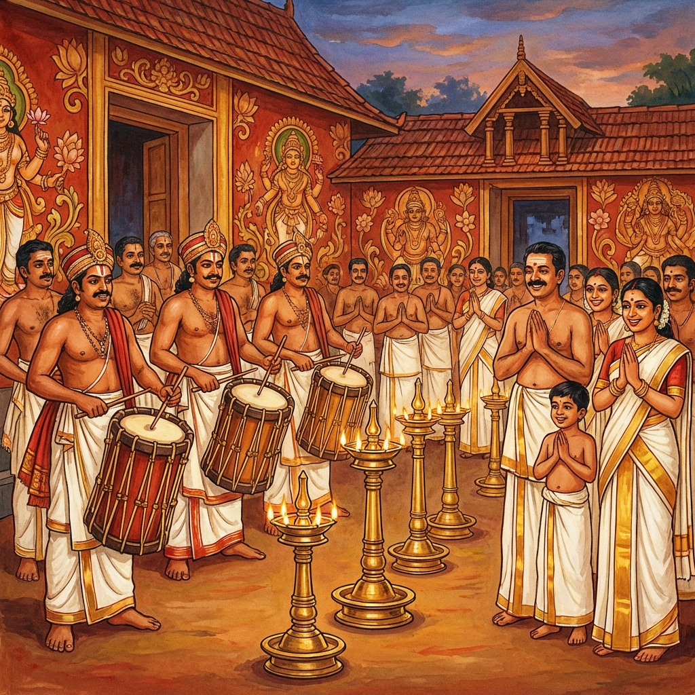

Pallippana
A Sacred Ritual Conducted Once in 12 Years
February 8 - 22, 2026
Ambalapuzha Sree Krishna Swamy Temple
A Sacred Ritual Conducted Once in 12 Years
Ambalapuzha Sree Krishna Swamy Temple
Ambalapuzha Sree Krishna Swamy Temple is a sacred place rich in legends and ritual traditions. The temple was built over 410 years ago by King Devanarayana of Chembakassery. During its history, a dispute arose between the Tantric communities of ‘Kadiyakol’ and ‘Puthumana’. Following this, the Parthasarathy idol worshipped by the ‘Valiyamadam’ family, the Uralans of Karingulam Temple was brought here and placed for worship. The temple is regarded as the southern Dwarka, where daily pujas are performed by the Melshantis of ‘Kannamangalam’. The ancient ritual of Pallippana, which began 360 years ago and is conducted only in a few temples in Kerala, will be held here from Sunday, February 8 to February 22, 2026, drawing devotees in a deep wave of faith.
'Pana' means song. Pallippana is a song performed in the sacred vicinity of the Lord. The purpose of the Pallippana ritual is to awaken Lord Mahavishnu, who is believed to be in a state of rest due to his many responsibilities, through devotional songs and to inspire him to engage in divine action. The ceremonies are led by Karmis from the Vela community. People from castes like Ganakan, Panan, and Mannan also participate in the ceremonies. The Pallippana ceremonies recall the rights that were granted to all castes in the Ambalappuzha temple during the period when caste thoughts and customs prevailed. The Rajapratinidhi, Melshanthi, Koimma Sthani, Kazhakkakar, Vadyakar, Adichuthalikar, Tachanmar, Ambanattu Panikkan, Malayam Thattan, Kollan, and others associated with temple rituals, will be part of the Pallippana.
Every year, Panthrandu Kalabham is conducted from the first to the twelfth day of Makaram, and when twelve such cycles are completed over time, the Pallippana ritual is conducted.

The main ritual phase spanning 15 days, featuring daily special poojas and ritualistic performances.
Follows the Pallippana, this 8-day ceremony involves purification rites with sacred substances.
The annual Thiru Utsavam follows the Dravyakalasam.
The sacred beginning of the festival. The 'Kaappu' (sacred thread) is tied, signifying the commencement of the vows and rituals. The presiding deity is invoked with special offerings.
Worship involving sacred pots (Kalashas) to invoke protection ('Raksha') for the temple and the devotees. Chanting of specific mantras accompanies this rite.
A symbolic representation and ritual offering paying homage to the ancestors and the great warrior Bheeshma. Special prayers are conducted for lineage purity.
A vibrant ritual dance performance ('Thullal') dedicated to the Goddess Bhadrakali. Performers in trance-like states invoke the deity's blessings.
A major sacrificial rite (symbolic) using large gourds ('Kumbha') representing the offering of the ego and negativity to the divine.
The grand finale. The 'Valiya Kolam' (Great Form) is displayed or enacted. The festival concludes ('Samapanam') with the lowering of the flag and final blessings.
Ambalapuzha, Alappuzha District
Kerala, India - 688561